Creating Angular CRUD
In this session we will to create the completely CRUD using angular.
Let's open our order-list.component component within the features directory. And then we will create a variable that will receive the list of orders that we will display on the screen and we will import our service using injection from the angle to use our order service methods. The angular component has some methods that we can use through the implements such as ngOnInit which is invoked as soon as the component is started. In addition to onInit we have others such as ngOnChanges, ngAfterContentInit etc. For more details on angular lifecycle access the link. We will create a method that will call our service and then invoke this method whenever our component starts, for that we will use the ngOnInit method, important to remember to import our order class and our service to avoid compilation errors as shown below.
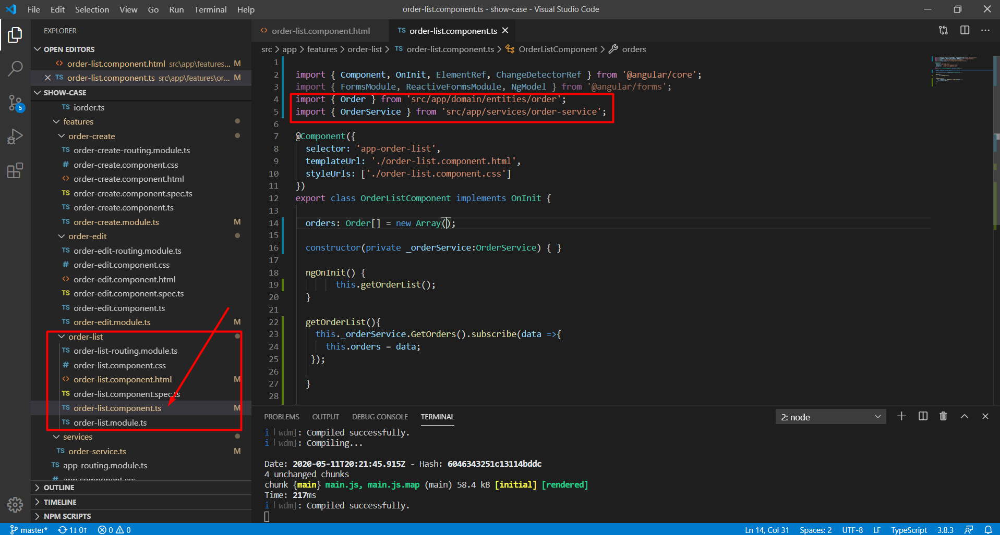
Now let's create our list in the part corresponding to the html in the order-list.component file. We will create a simple structure, just to exemplify but if you want to apply CSS or use datatables or bootstrap feel free. Inside our html we will use the angle markings to check if the list is empty and to render our list as shown below.
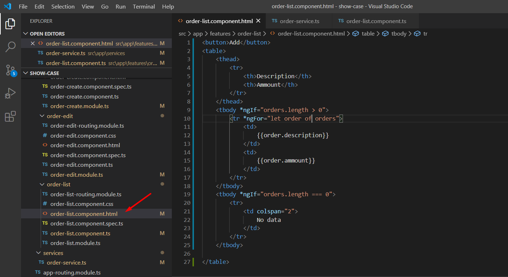
Now let's comment on the api's reading structure because in our example we are not accessing a real api. we created the structure just to exemplify how a REST api works. we will use localstore to store our list. We will make the change both in our service and in our component as below.
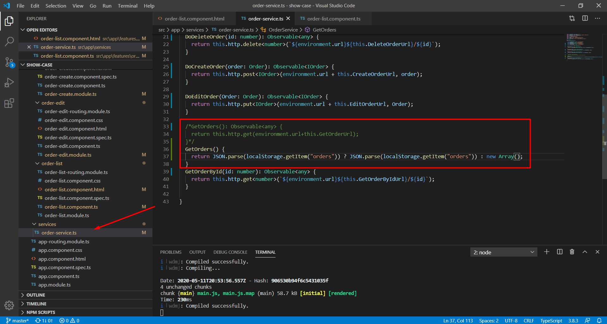
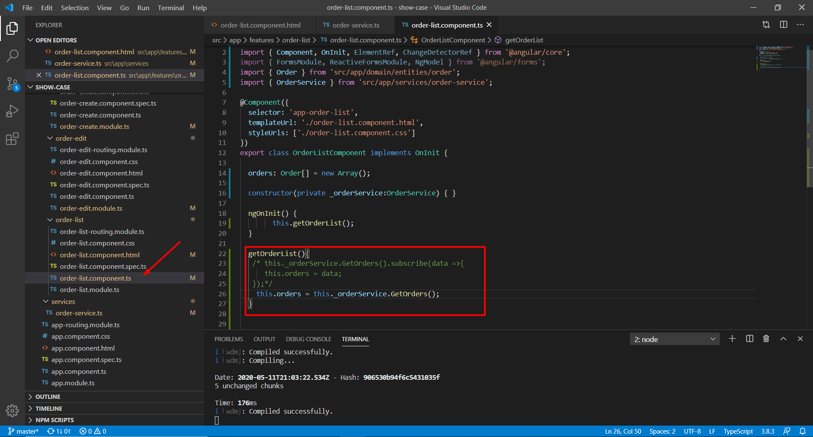
There, our list component is ready. Now to finish let's put the action in the add button to direct to the page of the application creation form.
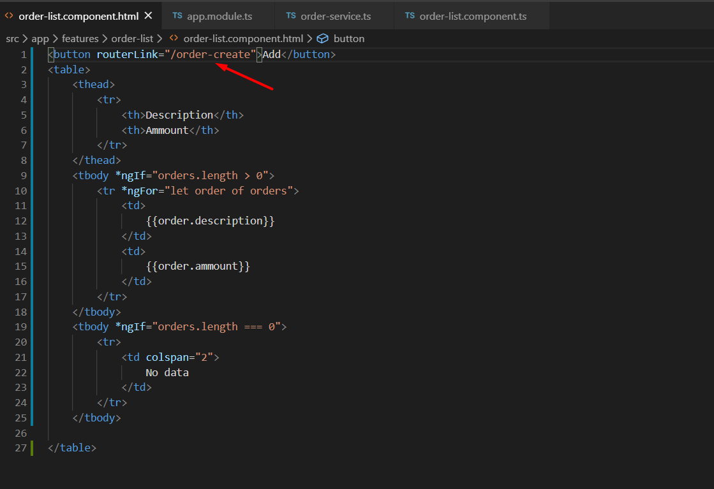
By clicking on the add button our route will be redirected and we will create our form in html. It will contain the information of our class order ngModel in the inputs that received the values. The values inserted in the inputs will be automatically updated directly in our object. This feature uses the angular feature called formsModule that we will insert in our registration module, this magic happens through the two-way binding concept. More details on the official link. We also need to create on our save button. Save action that will be reflected in our component. we use the notation with () to tell the angular that that html component attribute is an action reflected in the component. Inside it we put our method that we will create it in our component.
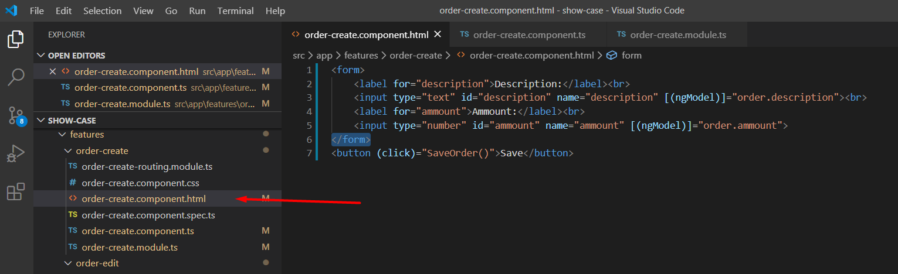
Now we will import the FormsModule resource into the order-create module
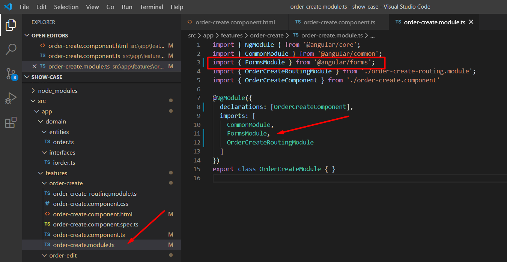
And to finish our registration now we will implement our component order-create.component. We will create the variable order that is used in our form using the two-way databing feature and we will apply in our builder the feature of the angular router which by default it already uses the injectable feature. Let's create our save method by retrieving the list from our localStorage by adding the object to the list and playing it again in our local storage. We will display a success message and use the router feature to redirect to our list
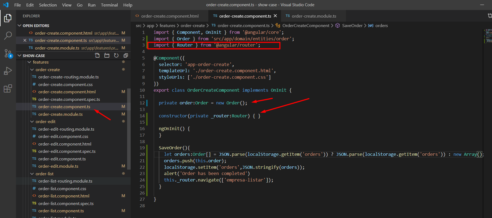
And finally, let's do our editing form and implement the delete. To do this we will first implement the actions on our list. We started by changing the html and inserting the action column and we will also take the index from our list to use as a reference in the delete edition. In editing we use the routerLink feature again with a small difference, this time we will pass a parameter. We also need to change the routing there in our editing module to receive the parameter.
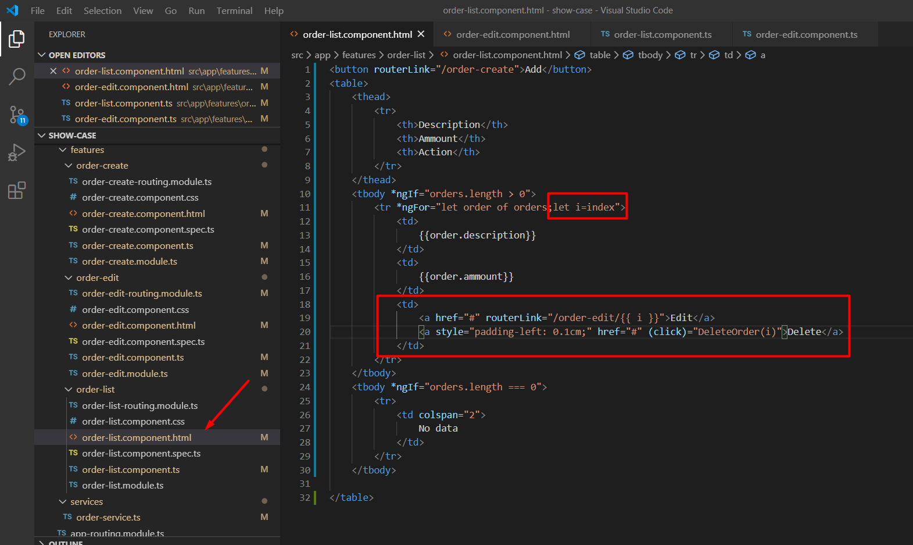
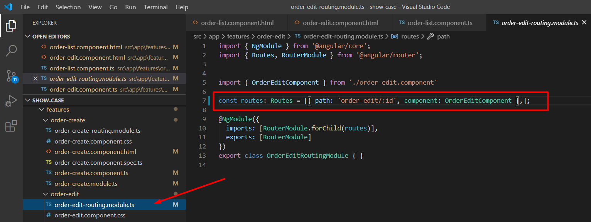
Now we are going to implement the delete in our list component following the simple logic to delete the array based on the position we passed and updating our localStorage. Always remembering that in the real case of an api we would use the routes that we created in our service.
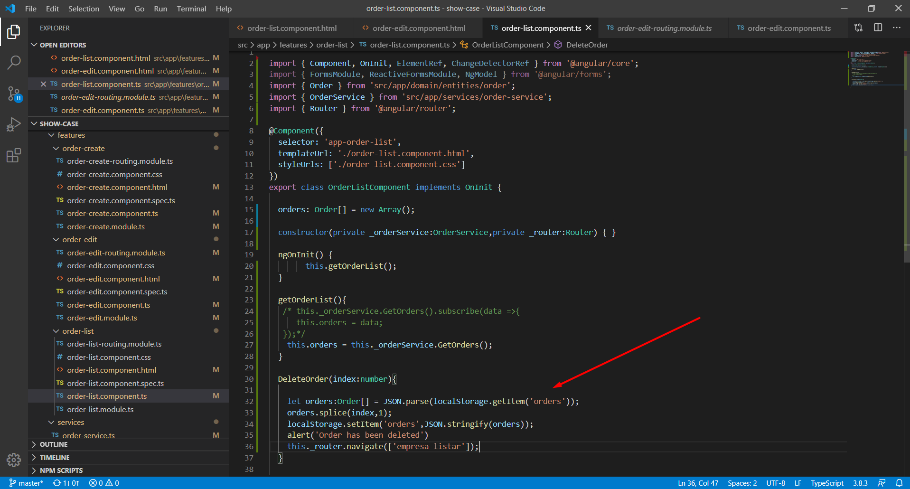
and to close we are going to implement our editing component. We redo the same process of implementing the creative component with only one difference. We take the id passed through the ActivatedRoute feature of the angle in which we need to insert it in the costructor because the pattern already has the injectable of the angle also implemented. Through our localStorage we identify the object and fill it with the corresponding values, ready the magic happens! We will implement the editing method by changing the exact position of our array and replace our localStorage.
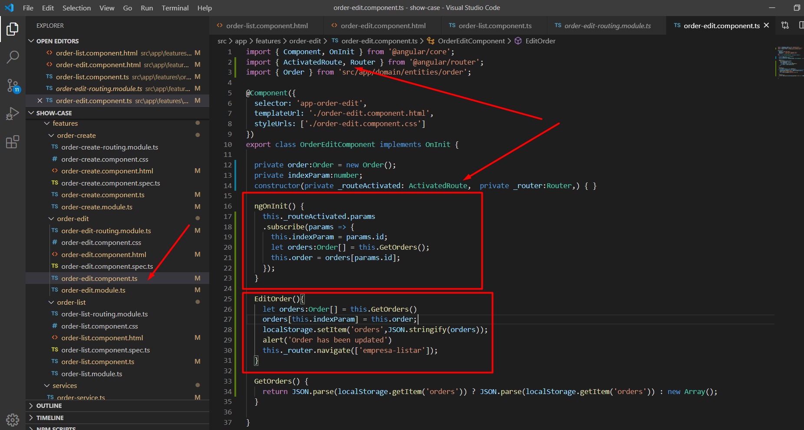
As you can see our html does not have any type of change in particular except the name of the editing method.
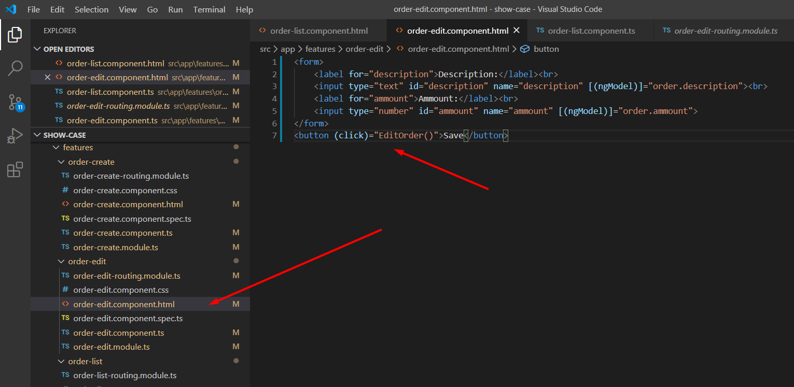
And here we end the complete angled crud. Check out the project we created along this route on github here
.